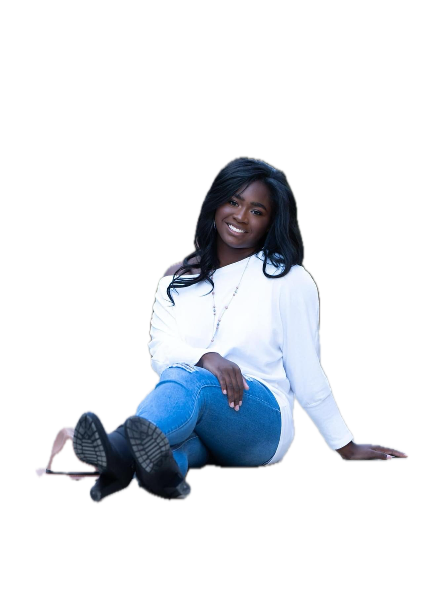

A student at Berry College pursuing a degree in Computer Science with a minor in Data Analytics, with plans to pursue a
Master’s degree in Digital Marketing after graduating in May 2026. I am passionate about combining technology, data, and
storytelling to create engaging digital marketing strategies within the sports or entertainment industry that connect teams,
athletes, and fans. My interests include sports marketing analytics, fan engagement strategies, social media marketing, and
digital content creation for sports organizations.
In addition to my academic experience at Berry College, I have completed an online certification in Web Design and Development
through Cornell University, which provided me with a strong foundation in design principles, user experience, and modern web best practices.
I have applied these skills to projects focused on building engaging, user-friendly digital experiences that translate well into sports
media and marketing platforms.
I am excited to continue growing in the field of digital marketing, with a focus on leveraging both technical and analytical skills to support
marketing strategy, and I am always seeking new opportunities to expand my experience in this evolving industry.
